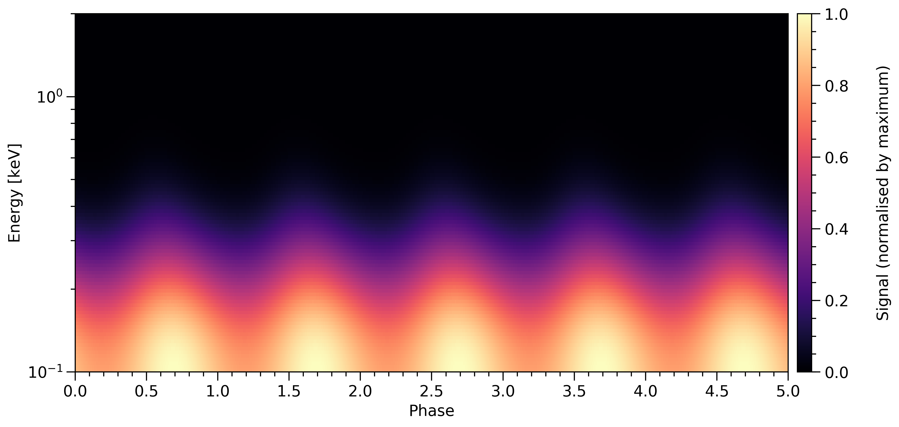

X-ray Pulse Simulation and Inference (X-PSI)
An open-source package for neutron star X-ray Pulse Simulation and Inference.
Warning
You are looking at the Python3 version of the documentation. The Python2 version of X-PSI (v1.2.1 and below) is now deprecated, please migrate your code to Python3 and X-PSI v2.0 or higher. The Python2 documentation for X-PSI is still available at this link.
X-PSI is designed to simulate rotationally-modified (pulsed) surface X-ray emission from neutron stars, taking into account relativistic effects on the emitted radiation. This can then be used to perform Bayesian statistical inference on real or simulated astronomical data sets. Model parameters of interest may include neutron star mass and radius (useful to constrain the properties of ultradense nuclear matter) or the system geometry and properties of the hot emitting surface-regions. To achieve this, X-PSI couples code for likelihood functionality (simulation) with existing open-source software for posterior sampling (inference).
X-PSI has been used most prominently (to date) in modelling pulsar data from NASA’s Neutron Star Interior Composition Explorer (NICER), for details see Publications.
Concept
The video below, generated by X-PSI, shows a neutron star with non-uniform surface temperature, as it rotates. In this specific case the star hosts a photospheric radiation field whose asymmetry is driven by an underlying ocean wave (a buoyant \(r\)-mode) of thermonuclear burning. The wave is effectively periodic over a small number of rotational cycles. The simulation was generated by feeding a wave solution, computed by Frank Chambers (Chambers & Watts 2020) in the form of a field of temperatures in surface local-comoving frames (\(\sim\! 10^{6}\,\mathrm{K}\)), to X-PSI for photospheric imaging. A number of simplifying assumptions are made in mode calculation and imaging, but this serves to illustrate the simulation and visualisation of a neutron star that pulses in the X-ray regime due to rotational modulation of some mode of radiative asymmetry at the surface.
Each panel displays a specific photon intensity sky map. Panels from top-left to bottom-right increase in photon energy. The intensity field in each panel is uniquely normalised to the maximum intensity over all phases and sky directions. The remarkable evolution of the image with photon energy is due to relativistic beaming: at energies much greater than the characteristic temperature, the contribution to the image is entirely dominated by the hottest region of the surface being relativistically beamed toward the observer as it approaches on the left-side of the star. This is the same effect seen in many other astrophysical simulations, particularly of images of (supermassive) accreting black holes (for instance by the Event Horizon Telescope collaboration), although it was interestingly omitted from the motion picture film Interstellar (James et al. 2015).
The following image integrates (and thus averages) over waveband (a range of photon energies). We also decrease the mode frequency relative to the stellar spin frequency, such that the mode is not as equatorially trapped.[1]
If one integrates over solid angle (i.e., over sky directions), one is left with a specific photon flux in a joint space of photon energy and time (i.e., rotational phase). This is natural because galactic neutron stars subtend far too small a solid angle on the sky to be spatially resolved by any telescope: they are point sources. We must nevertheless account for the variation of intensity with sky direction if we are to compute the data-generating process. If one then integrates over phase, the phase-averaged spectrum of photons incident on a telescope is yielded; if one instead integrates over some waveband, a photon pulse-profile is yielded. The following displays several cycles of a phase-energy resolved pulse-profile generated by the more equatorially trapped, \(r\)-mode rendered above.

The integration over energy is, for likelihood function evaluation, modified by a kernel for the response of an X-ray telescope to the incident radiation field.
Footnotes
Tutorials
Likelihood API
Extension modules
Posterior API